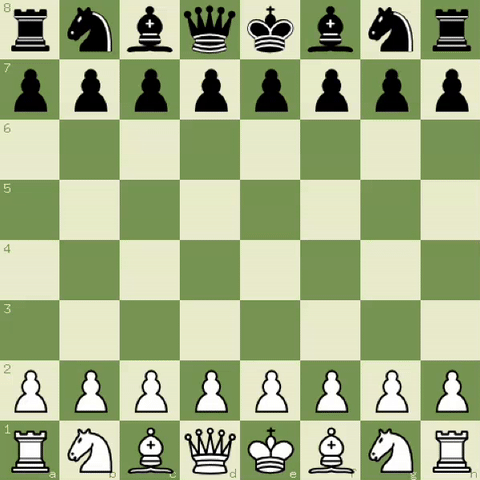

goldfinger 2025
a chess engine written in go: peaked ~2000 elo on lichess.
a chess engine needs chess. chess needs a board. my first approach was arrays, but i eventually found out about bitboards: twelve 64 bit integers that each represent a unique piece. 6 piece types * 2 colors = 12 integers. each bit is a square in the 8x8 board and flipping it adds and removes a piece at that square. they also happened to be magic bitboards, which means that the moves for sliding pieces like bishops and rooks are precalculated as bitmasks.
goldfinger uses PeSTO's eval, which scores each piece based on its position using piece-square tables. there are two tables for each piece (midgame + endgame) that get tapered as the game progresses. this is simple, but effective.

the search algorithm i used was negamax with alpha-beta pruning with iterative deepening and aspiration windows. each iteration will search a narrow score window and widens it on failure. earlier iterations will improve move ordering for deeper ones. i also used principal variation search which allots a full search window for the first move at every point. the other moves have a null window and get pruned if they don't improve alpha.
move ordering determines how fast alpha-beta prunes, since a good move ordering can reduce the branching factor. goldfinger does move ordering with the mvv-lva, killer, and history heuristics. search results are cached inside a transposition table, where the board's state is saved with zobrist hashing. my late move reductions use a log-scaled formula based on depth and move index to search shallower for moves that scored lower. finally quiescence search is used for the leaf nodes and will continue until the position is quiet.